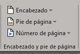

Para poner pie de pagina en word, primero nos tenemos que ir a la pestaña insertar, en la
caja de herramientas "Encabezado y pie de pagina", seguidamente seleccionaremos la herramienta
numero de pagina en la opcion que nosotros querramos enumerar.
Si yo quiero quitar la enumeracion busco la caja de herramientas Encabezado y pies de pagina, seleccionamos
